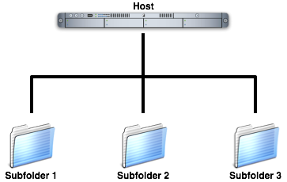

Publishing multiple sites to a single Host
Sandvox allows you to publish more than one site to a single host. To do so, you publish each site to a different subfolder:

Once each site is published you then direct site visitors to the appropriate URL. So for example, something like:
http://www.example.com/subfolder1 http://www.example.com/subfolder2
You enter each site's subfolder while setting up your Host. Depending on the location a site is to be published to, this information is entered at either: